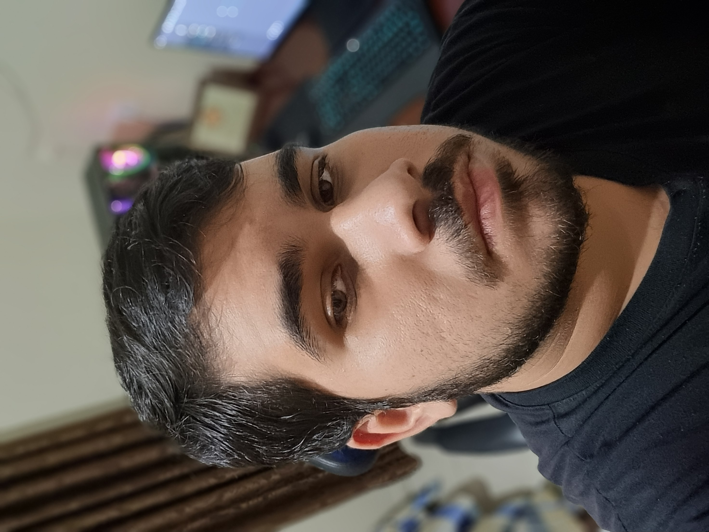

Renato Muchni Teixeira
Técnico em Informática

Contato
- Telefone: (43) 98443-9922
-
 Email: remuchnit@gmail.com
Email: remuchnit@gmail.com
-
 LinkedIn:
linkedin.com/in/renato-muchni-1893a2400
LinkedIn:
linkedin.com/in/renato-muchni-1893a2400
-
 GitHub:
github.com/renatomuchni
GitHub:
github.com/renatomuchni
Habilidades
Suporte Técnico em TI
Manutenção de Ativos
Desenvolvimento de Soluções
Automatização
ODS que pretendo contribuir

ODS 8 — Trabalho Decente e Crescimento Econômico: promover o crescimento econômico sustentado, inclusivo e sustentável, o emprego pleno e produtivo e o trabalho decente para todas e todos.
Resumo
Técnico em Informática com 7 anos de experiência na manutenção de ativos de informática. Buscando sempre aprimorar o conhecimento e desenvolver novas soluções.
Experiência Profissional
Auxiliar Técnico em Manutenção | Germani Assessoria em TI
12/2023 – Atual
- Responsável pelo atendimento presencial às empresas clientes.
- Colaboração no desenvolvimento de novas soluções de automatização.
- Conferência dos equipamentos elétricos e CPD da empresa.
- Acompanhamento na integração de novos colaboradores.
Estagiário | Prefeitura Municipal de Jataizinho
08/2021 – 08/2023
- Suporte técnico aos ativos de TI e usuários do Paço Municipal, Secretarias e demais prédios públicos.
- Inserção e alteração no portal do município.
- Desenvolvimento de melhorias dos processos relacionados à Tecnologia da Informação.
Educação
Ensino Médio
Colégio Estadual Prof.º Pedro V. Parigot de Souza | 2019
Tecnologia em Análise e Desenvolvimento de Sistemas
Universidade Tecnológica Federal do Paraná | 2025 – Atual